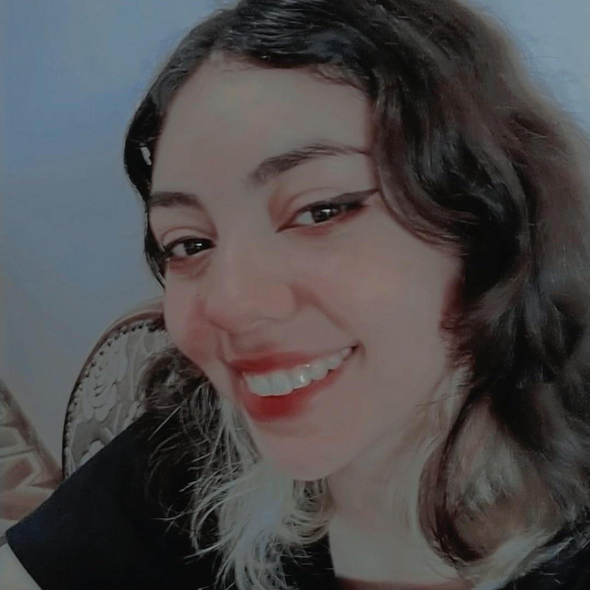
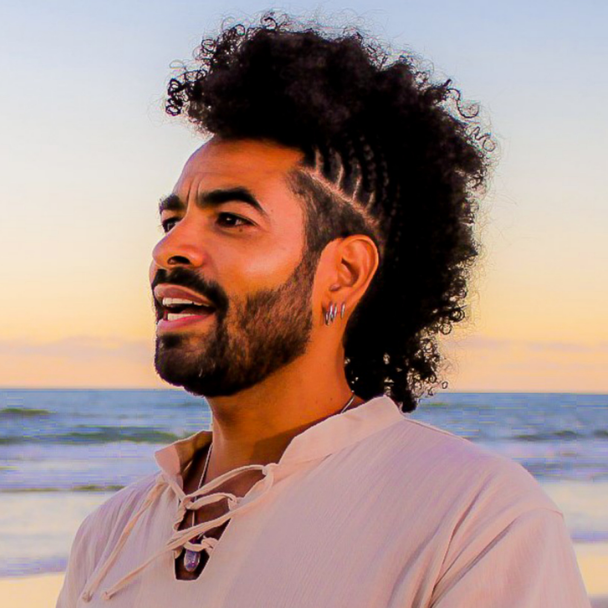

-
Rayssa Katsumata
Ooi, muitas pessoas me chamam de Ray, tem 15 anos, estudo no IFMS e estou no 4 semestre de informática. Eu amo fazer maquiagens, pois ajuda com a minha criatividade, e passo meus tempos livres com séries/filmes de diversos gêneros.
-
Letícia Borges 
Oee, sou a estudante Letícia Borges, mas podem me chamar de Lele, tenho 16 e estou no 4° semestre do curso Técnico em Informática Integrado do IFMS. Sou uma pessoa que gosta muito de música, >qualquer tipo de música<, e também tenho muito interesse em corte e costura e customizações!
ALUNAS
-
Fabio Luiz
Possui graduação em Engenharia da Computação - Faculdades Associadas de São Paulo (2006), especialização pela FACEL em Docência em Ciência e Tecnologia da Informação (2018) e especialização pela FIAR em Licenciatura Pedagógica em História. Atualmente é professor efetivo do IFMS. Tem experiência na área de Ciência da Computação, com ênfase em Análise e Desenvolvimento/Desenvolvimento Web. Veja mais sobre o professor em seu Curriculo do Lattes.